"Yes, that's what I mean.
No, not that"
Semantics, Shared References, and Iteration In Human AI Collaboration
Valentina Shin
Adobe Research
June 4th, 2026
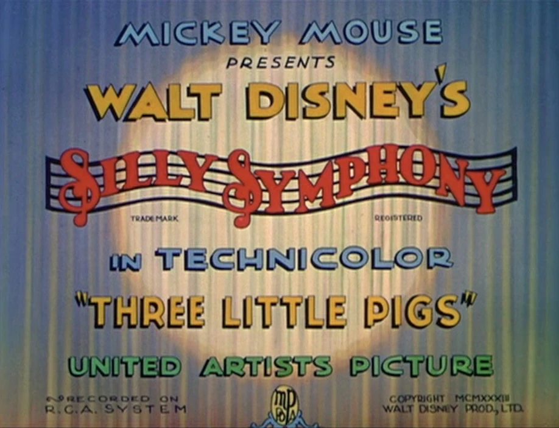
Three Little Pigs, Walt Disney animated short released in 1933
First film to be fully storyboarded
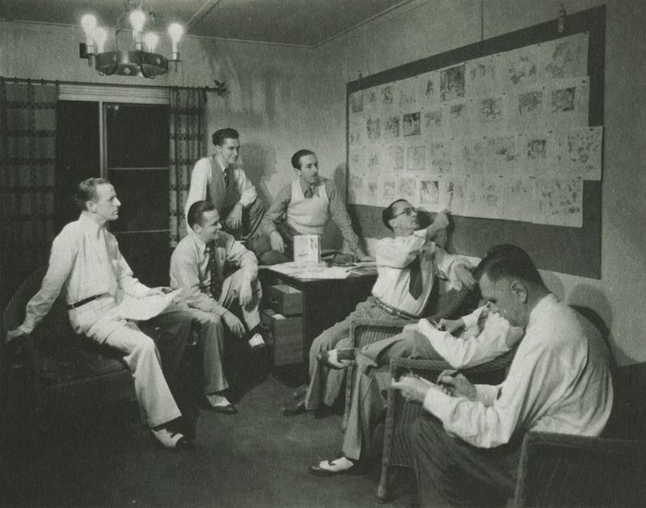
Storyboarding becomes industry standard
Walt Disney established the studio’s first dedicated Story Department
Every major American animation studio had a dedicated story department
Gone with the Wind used storyboards to plan every single shot
“Once the screenplay is finished, I’d just as soon not make the film at
all. I have a strongly visual mind. I visualize a picture right down to the final
cuts.”
— Alfred Hitchcock, interview with Roger Ebert
Before storyboarding
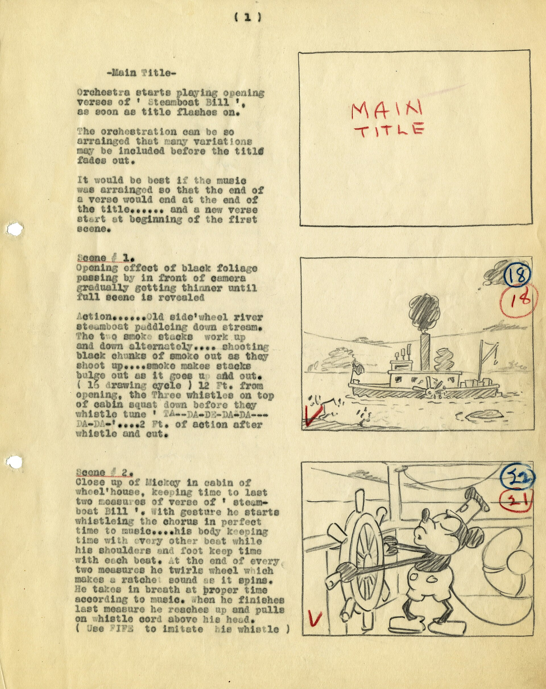
Lack of shared vision · Difficulty communicating pacing and timing · Misinterpretations · Expensive to iterate
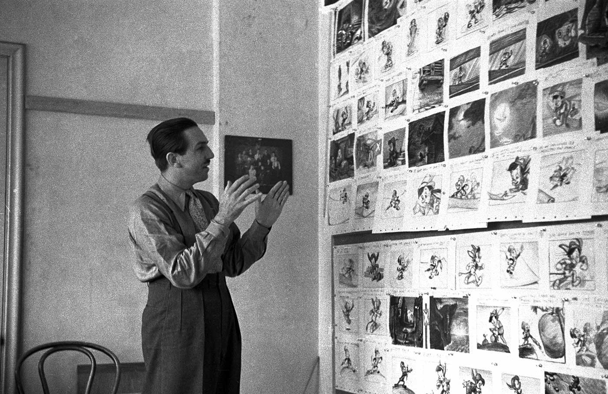
Storyboards work because they
- represents story in semantic units
- creates a shared reference
- makes iteration cheap and easy
These principles apply in human-human collaboration, human-AI interaction and multi-agent coordination
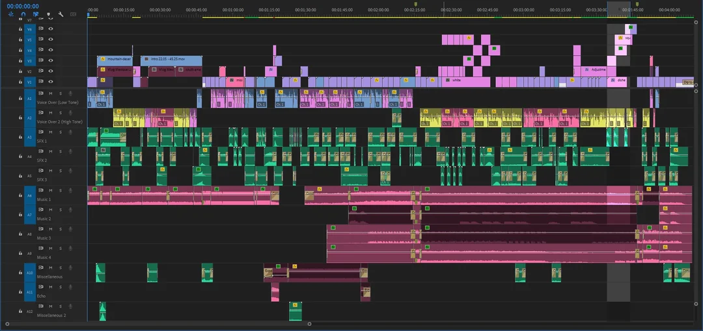
This talk (my research) is about
designing effective audiovisual interfaces by supporting
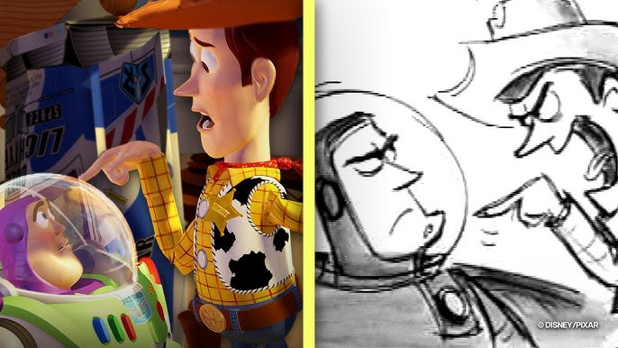
semantic authoring
shared references

iteration
Thanks to…
Li-Yi Wei
Rubaiat Habib Kazi
Anh Truong
Rob Gonsalves
Jiaju Ma
Anyi Rao
Maneesh Agrawala
Saelyne Yang
Changyoon Lee
Juho Kim
John Chung
Haijun Xia
Yining Cao
Yiyi Huang
Support Semantic Authoring
by translating high-level intent into algorithms or operations.
Taylor Swift — Long Live
No copyright infringement intended.
User’s Intent
Show the lyrics naturally within the scene.
Operations
Adjust text segments, bounding boxes, timestamps, color, and keyframes.

Gulf of Execution
(Don Norman, 1986)
Automated Conversion of Music Videos
into Lyric Videos
Jiaju Ma1, Anyi Rao1, Li-Yi Wei2, Rubaiat Habib Kazi2, Hijung Valentina Shin2, and Maneesh Agrawala1,3
1Stanford University 2Adobe Research 3Roblox
ACM Symposium on User Interface Software and Technology (UIST 2023)
User’s Intent
Show the lyrics naturally within the scene.
Temporal: show readable chunks of lyrics timed with the song
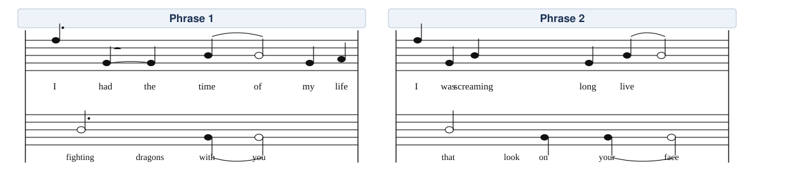
User’s Intent
Show the lyrics naturally within the scene.
Spatially — find optimal placement
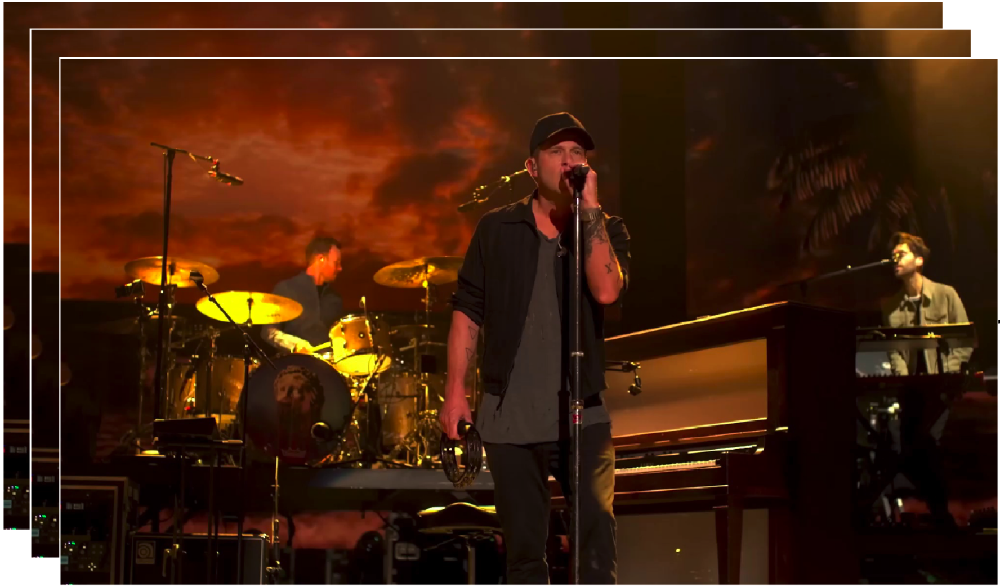
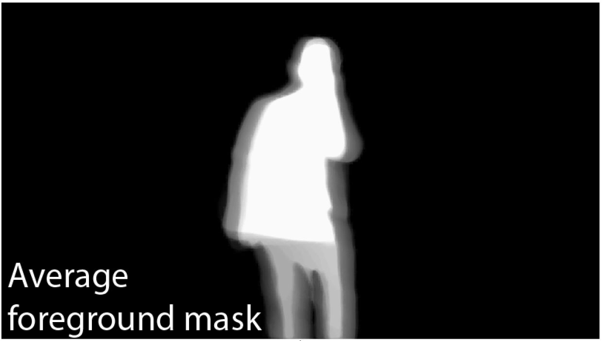
Not occluding important subject
Efgd = s̄fgd ⊗ k
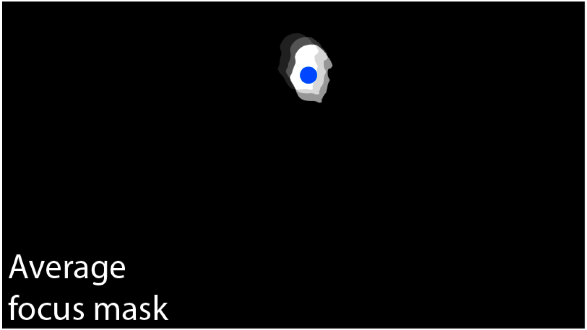
Close to natural attention
Efcs = ‖pcenter − p‖²
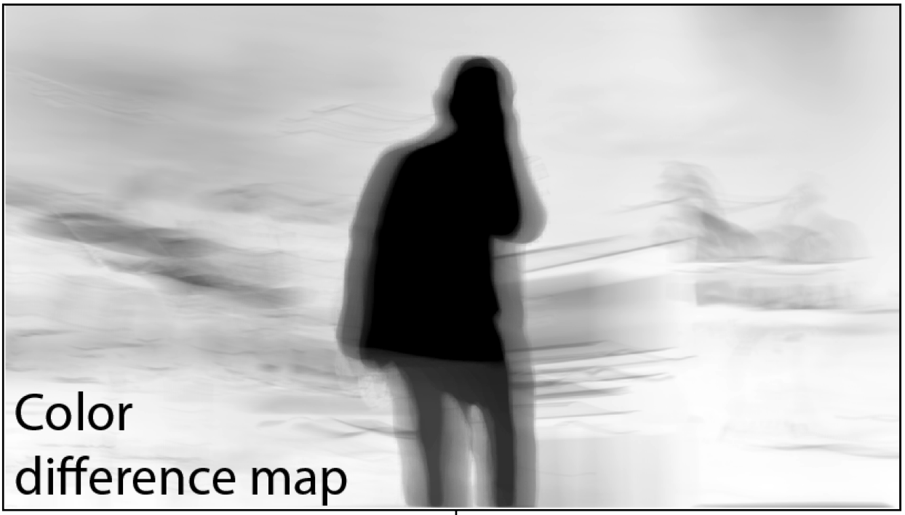
Contrast with background
Ecnt = c(p)
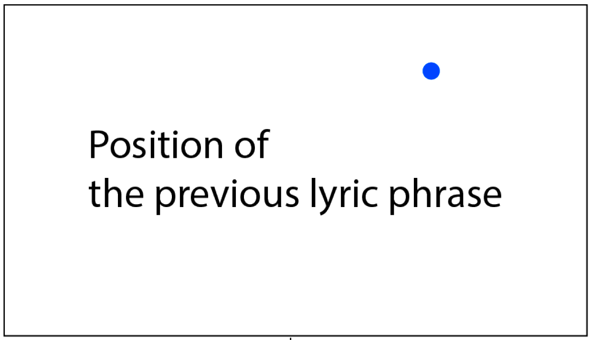
Consistent across phrases
Eprv = ‖pprev − p‖²
pmin = arg minp ( wfgd·Efgd + wfcs·Efcs + wcnt·Ecnt + wprv·Eprv )
Results generated from our pipeline
Semantic Authoring in Text-based Video Editor
Identifies descriptive moments and auto-inserts visual clips
Project Blink: Adobe Incubation Project
Designing effective audiovisual interfaces
semantic authoring
shared references
iteration
Establish Shared References
between humans, between humans and AI and between agents
Clark & Wilkes-Gibbs
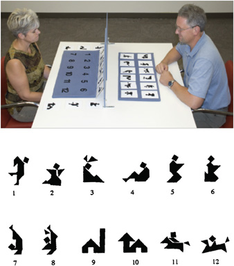
The problem with live stream interaction
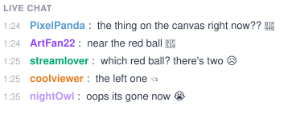
- Visual references are awkward in text chat.
- Streamers must split attention between performing and reading chat.
- Latency disrupts the communication.
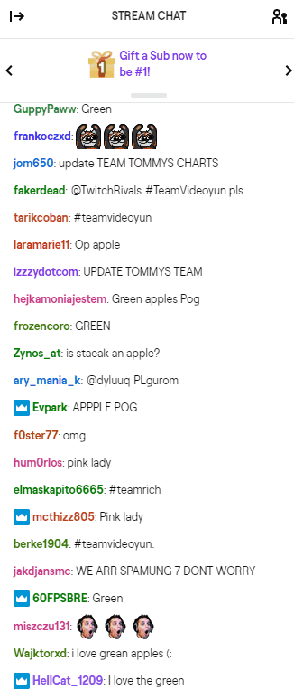
Snapstream: Snapshot-Based Interaction in Live Streaming for Visual Art
Saelyne Yang1, Changyoon Lee1, Hijung Valentina Shin2, and Juho Kim1
1KAIST 2Adobe Research
ACM CHI Conference on Human Factors in Computing Systems (CHI 2020)
Viewers can capture snapshots and share as conversational anchors.
What about richer visual input from viewers?
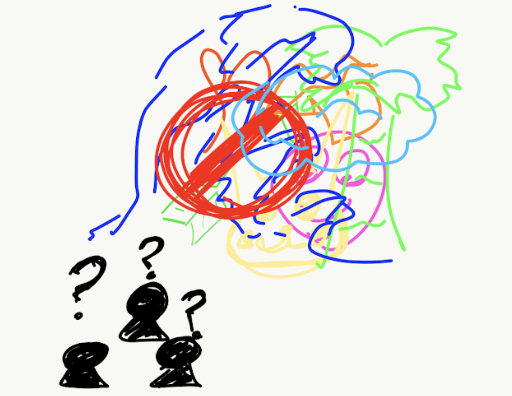
johnr0.github.io/publications/VisPoll_CHI2021
How can we enable flexible and scalable viewer visual input?
Beyond Show of Hands:
Engaging Viewers via Expressive and Scalable Visual Communication in Live Streaming
John Joon Young Chung1, Hijung Valentina Shin2, Haijun Xia3, Li-Yi Wei2, and Rubaiat Habib Kazi2
1University of Michigan 2Adobe Research 3UC San Diego
ACM CHI Conference on Human Factors in Computing Systems (CHI 2021)
Visual attributes as shared references
Viewer visual inputs can be decomposed into visual attributes — shared dimensions that streamers and viewers use to make sense
Position
Shape
Rotation
Size
Color
Streamers specify visual attribute constraints
Live stream
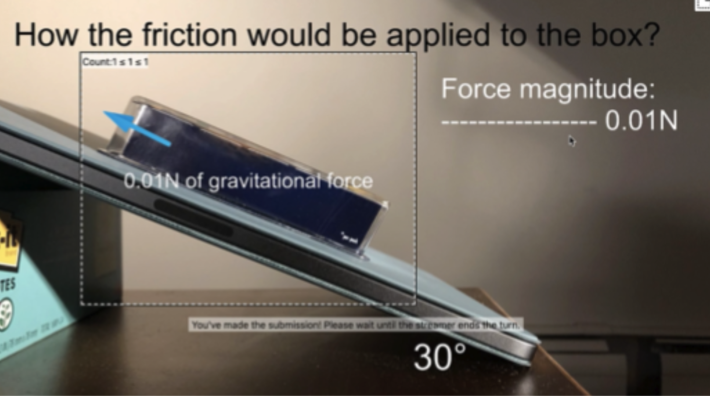
Attribute constraints
Viewer input
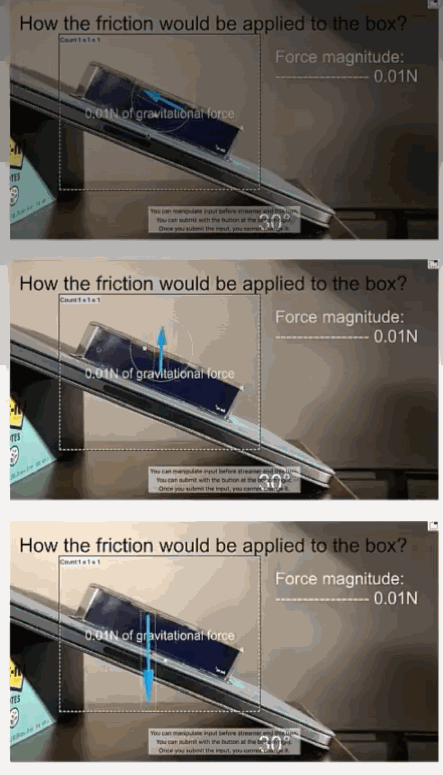
...Clustered by rotation & size
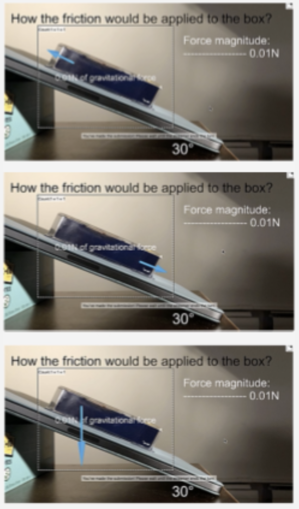
×50 ×20 ×10Aggregated visualization
Width of arrow ∝ input count
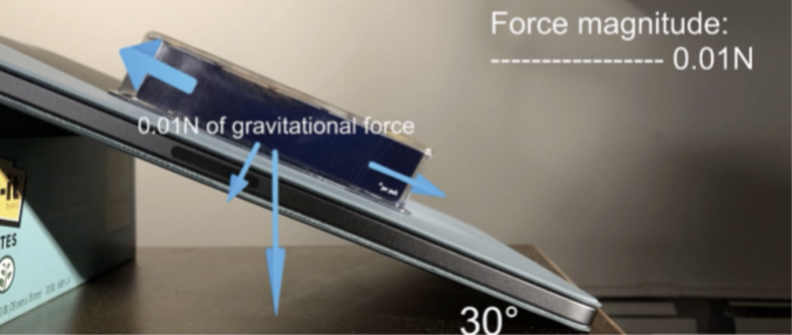
Application scenarios
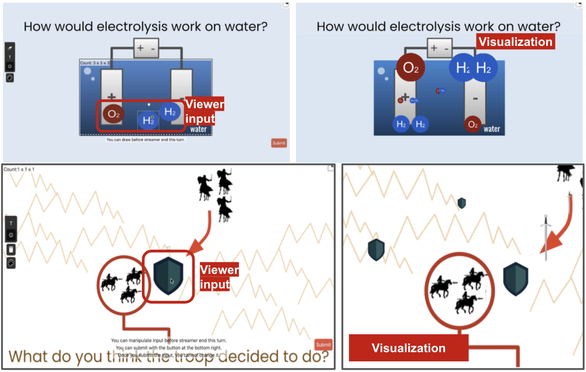
Application scenarios
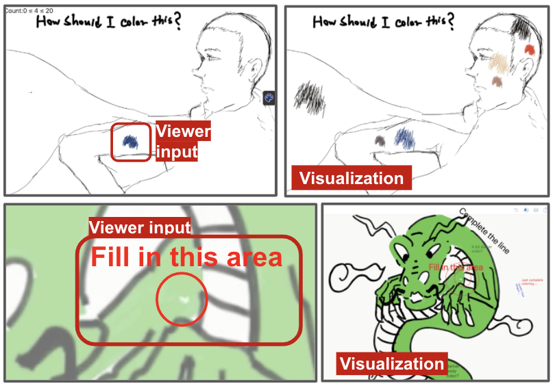
Establishing Shared Reference with Agents
Adding editing rules for agents by demonstration
Recording by Rob Gonsalves
Designing effective audiovisual interfaces
semantic authoring
shared references
iteration
The promise of agentic video editing?
Walter Murch's thought experiment
“What if there were a machine—a ‘black box’—that could connect directly to a director’s brain and translate their intentions instantly into a finished film?”
Walter Murch, In the Blink of an Eye
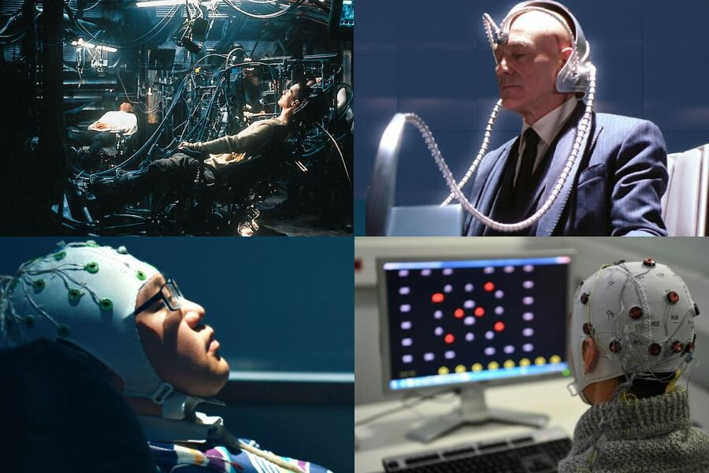
Creative process is as important as the creative output, perhaps even more
In the Blink of an Eye
Walter Murch
The kind of filmmakers who would instead reject the offer are interested foremost in the collaborative process of filmmaking, and in seeing a detailed vision mysteriously emerge out of that process, rather than being imposed by a single individual from the beginning.
In the Blink of an Eye — Silman-James Press
Toward Modeling Creative Processes for Algorithmic Painting
Aaron Hertzmann
Adobe Research
Abstract
This paper proposes a framework for computational modeling of artistic painting algorithms, inspired by human creative practices. Based on examples from expert artists and from the author’s own experience, the paper argues that creative processes often involve two important components: vague, high-level goals (e.g., “make a good painting”), and exploratory processes for discovering new ideas.
Creative process is iterative
What’s fun about story development at Pixar is it’s a journey. You don’t just write a script and then that’s the movie you make. It’s just constant evolution and being open to that and that collaboration with the voice actors and with the artists and animators at Pixar.
John Lasseter, former Chief Creative Officer, Pixar Animation Studios
So how do we support iteration?
Intermediate artifacts
Video editing workflows involve multiple stages and intermediate artifacts.
Workflow
Stages
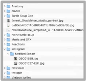
Asset Collection
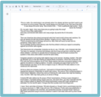
Narrative Development
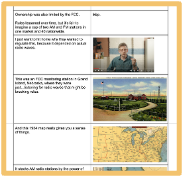
Scene Planning
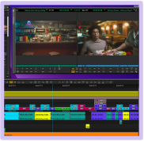
Timeline Sequencing
Intermediate
Artifacts
Canvas
Text Editor
Storyboard
Timeline
Compositional
Structures
Hierarchy / Affinity
Linear
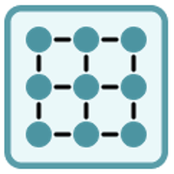
Alignment
Temporal Synchrony
Agentic Video Editing ≠
Chat Interface
CLI for Claude Video Editing Agent (prototype)
Compositional Structures as Substrates for
Human-AI Co-creation Environment:
A Design Approach and A Case Study
Yining Cao1, Yiyi Huang1, Anh Truong2, Hijung Valentina Shin2, and Haijun Xia1
1UC San Diego 2Adobe Research
ACM CHI Conference on Human Factors in Computing Systems (CHI 2025)
Effective interfaces should surface intermediate artifacts that encode semantic structures
VideOrigami: human-AI video co-creation environment
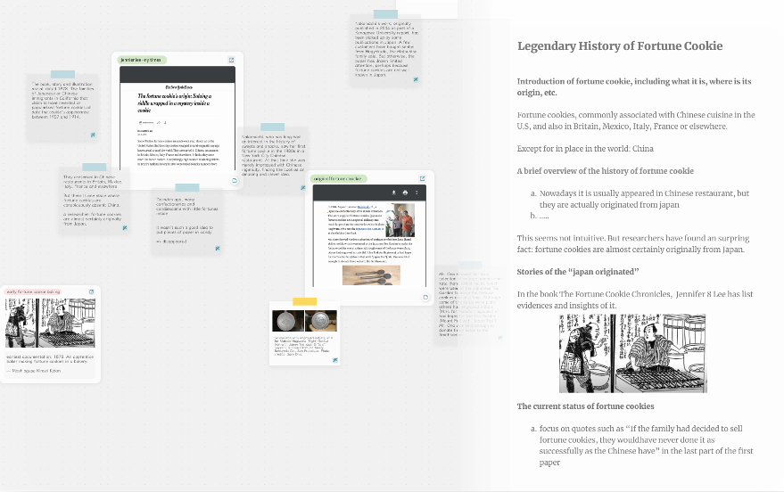
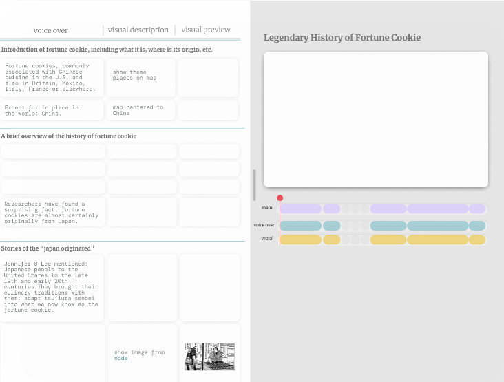
Canvas
Editor
Storyboard
Timeline
User and AI collaborate through intermediate artifacts
Canvas View
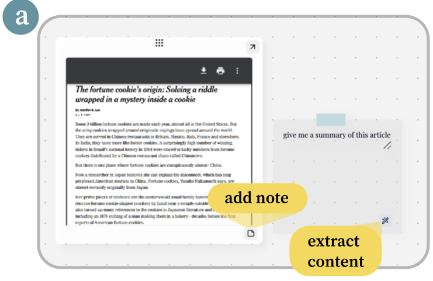
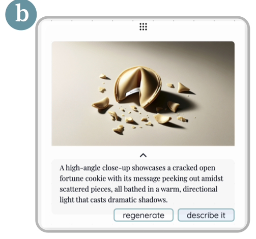
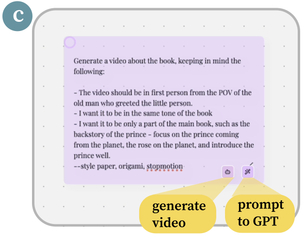
Artifacts become context for AI
Narrative Editor
- Generating narrative content takes as context assets, notes, and surrounding narrative
Semantic structures enable synchronization
Canvas ↔ Editor
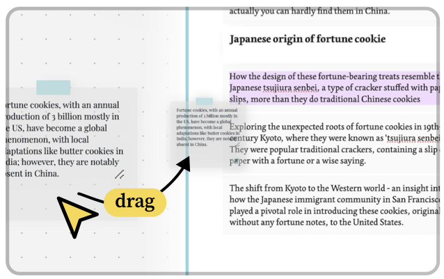
Editor ↔ Storyboard
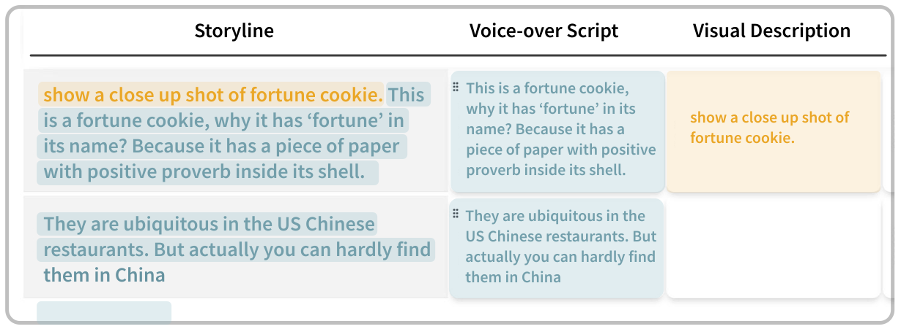
Synchronization supports semantic operations
Timeline ↔ Storyboard
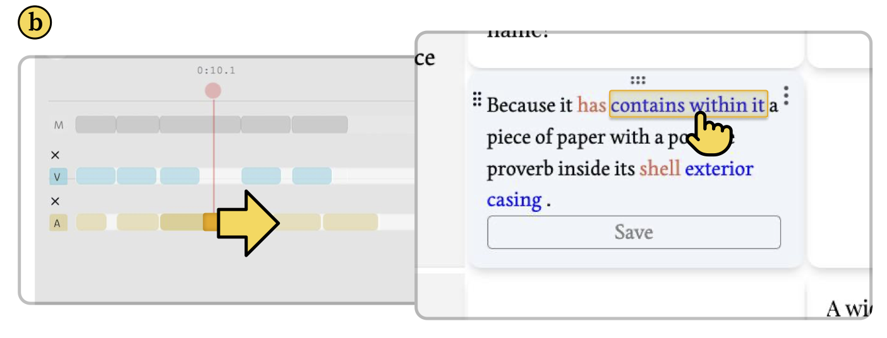
- When a user lengthens a segment in timeline,
edits are suggested to the corresponding storyboard cells to align with new timing
Designing effective audiovisual interfaces
semantic authoring
shared references
iteration
Open Research Questions
- Supporting exploration across many parallel artifacts and agent-generated alternatives
- Tracking the history of decisions made by both humans and agents
- Designing productive friction, not just productivity
Who are we building for?
Backup Slides
B-Roll Suggestions
Identifies descriptive moments and auto-inserts visual clips
Supporting Orientation Across Parallel Branches
When AI makes it cheap to generate many variations, the fundamental challenge shifts from creation to orientation.
“Git has a softly built-in assumption of one ‘master’ branch, which temporarily forks off into PRs just to merge back a bit later.”
— Andrej Karpathy, March 2026
The original repo is more of a seed, from which could sprout commits on all kinds of different research directions. What does version control look like when branching is the norm, not the exception?
VideoDiff: Comparing video versions is hard
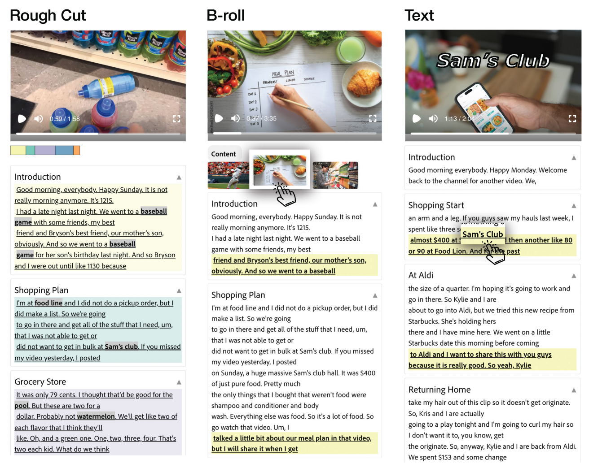
Huh et al. · VideoDiff · CHI 2025
Key challenge: Comparing differences between versions is especially hard for time-based, multimodal media. How do we help users make sense of many branches created with AI assistance?
Redefining “main” as creative intent, not a single implementation
The initial design specifies the designer’s intent. An agent translates that intent across multiple aspect ratios. The user authors multiple versions simultaneously.
Kim Pimmel · Designer at Adobe Research
Intent-Driven Authoring: Open Questions
The Shift
If “main” is no longer a single artifact but a specification of intent, how do we design version control, collaboration, and review workflows around it?
Tracking Decisions
As agents make autonomous decisions (cropping, pacing, shot selection), how do we surface which choices were made implicitly so creators can audit and revise?
What are the right interfaces for intent-driven authoring or consumption of media?
How do we enrich the creative process?
If agents become perfectly accurate, does the creative process still matter?
“What if there were a machine—a ‘black box’—that could connect directly to a director’s brain and translate their intentions instantly into a finished film?”
— Walter Murch, In the Blink of an Eye
The case for creative process
In the Blink of an Eye
Walter Murch
The kind of filmmakers who would reject the offer are interested in the collaborative process of filmmaking, and in seeing a detailed vision mysteriously emerge out of that process.
Toward Modeling Creative Processes for Algorithmic Painting
Aaron Hertzmann — Adobe Research
Creative processes often involve two important components: vague, high-level goals and exploratory processes for discovering new ideas.
Beneficial Friction & Exposing Agent Decisions
Q1: What forms of friction are beneficial to the creative process, and how should we design for them?
Q2: How do we expose the implicit decisions agents make so users can understand, evaluate, and shape them?
Beyond Code Generation: LLM-Supported Exploration of the Program Design Space — Zamfirescu-Pereira et al. — CHI 2025
Design implication: Rather than removing all friction, identify which moments of pause, reflection, and constraint enhance creative ownership and discovery.
What do we mean by “effective”?
“General methods that leverage computation are ultimately the most effective.” — Richard Sutton, 2019
For creativity support tools, “effective” must go beyond task performance.
Creative Experience: How do we capture flow, agency, and enjoyment in human–AI collaboration?
Long-term Impact: How do AI systems shape creators and creative domains over time? Do they expand or narrow creative possibilities?
Sustainability: How do we account for environmental and societal costs beyond performance?
Only by developing robust ways to evaluate these dimensions can we design truly effective interfaces.